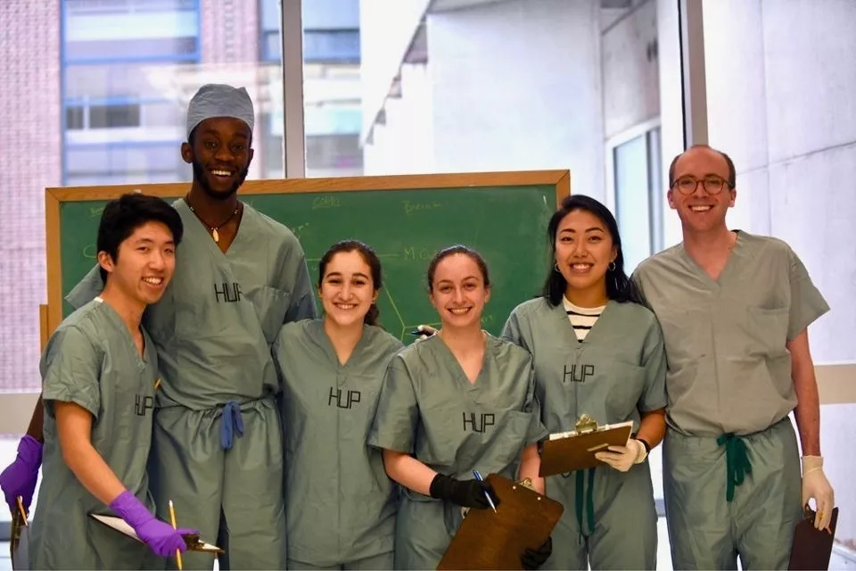

Sope Eweje
Improving health with technological innovation- MBA candidate, Stanford University Graduate School of Business
- MD student, University of Pennsylvania Perelman School of Medicine
- SB, Mechanical Engineering, MIT (2019)
About Me
I am a [something] My work has spanned from medical device development in industry and academia to researching various applications of artificial intelligence in medicine to starting some of my own ventures to bring these technologies to the bedside. I'm very passionate about innovation that enables meaningful, cost-effective improvements in healthcare delivery and patient outcomes that scales to the patients who need them the most. In the future I aim to integrate my experiences in engineering, medicine, and business into a career directly serving patients and developing medical technologies in parallel.The most interesting thing I've read recently (updated 7/1/2022): Why Isn't Innovation Reducing Healthcare Costs? (Health Affairs)
Medical School

Learning Team 11R at our final anatomy lab practical
Local news feature on Cut Hypertension, a student-led clinic that provides cardiovascular health screenings in a local Philadelphia barbershop.
Research
My undergraduate research as part of the Langer Lab was centered on the development of a large dose, gastroretentive drug delivery device aimed to improve treatment adherence for the management of infectious disease. In medical school, I pivoted towards applied artificial intelligence research, specifically focused on computer vision models for characterization of radiologic imaging studies with the Radiology AI Lab . Some highlights:💊 "A gastric resident drug delivery system for prolonged gram-level dosing of tuberculosis treatment" - We developed a drug delivery system that resides in the stomach to deliver large doses of drug over a month-long period then is retrieved. I led development of the retrieval system and was co-inventor on two pending patents for the technology. Published in Science Translational Medicine and Proceedings of the National Academy of Science .
🦴 "Deep Learning for Classification of Bone Lesions on Routine MRI" - Using a multi-institutional dataset of benign and malignant bone tumors as well as other bone lesions, we demonstrated that state-of-the-art deep learning models can assess malignant potential of bone lesions with performance similar to expert musculoskeletal radiologists. Published in EBioMedicine .
📈 "Translatability Analysis of National Institutes of Health-Funded Biomedical Research That Applies Artificial Intelligence" - I attempted to quantify the translational value of NIH-funded research applying AI by creating clinical impact metrics from publicly available citation and funding data. We applied an unsupervised natural language processing approach to identify and characterize applications of AI from NIH grant applications. Published in JAMA Network Open .
🩻 "Prognostication of patients with COVID-19 using artificial intelligence based on chest x-rays and clinical data: a retrospective study" - Deep neural networks trained on triage chest x-rays from patients with COVID-19 were used to build time-to-event models that predict risk of disease progression. Prognostic performance was optimized by combining deep learning features with clinical data. Published in The Lancet Digital Health .
Entrepreneurship

Co-founder and CTO of Disati Medical, a respiratory monitoring
medical device startup working to take the guesswork out of
respiratory care

Co-founder and Managing Director of the Critical Healthcare
Information Integration Network, a non-profit empowering African
community health workers with a mobile-based medical reference
tool